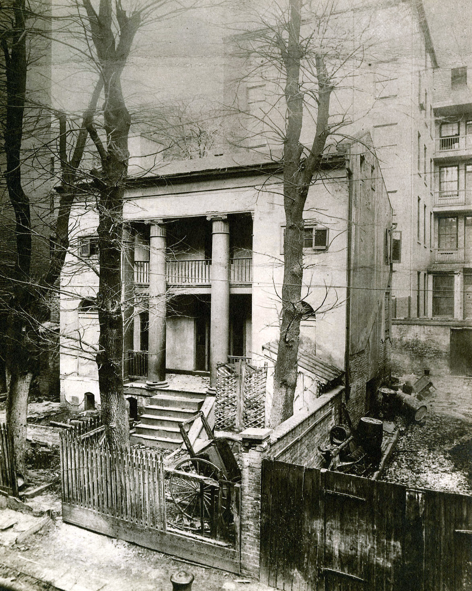

![]()
This post is the first half of a paper I am working on for the 2015 Vernacular Architecture Forum conference in Chicago this June. The paper focuses on the history of vacant housing and demolition from the mid 19th to early 20th century. This is a draft so I’d welcome any initial thoughts, questions or suggestions.
We have a problem with vacant houses in Baltimore. A vacant might be a bank-owned brick townhouse from the 1970s; a narrow two-story rowhouse built for working-class whites in the 1910s; or a four-story 1870s mansion half-collapsed into the basement. Baltimore City estimates the city holds around 16,000 vacant properties – mostly attached rowhouses built before WWII.
Visitors to Baltimore won’t find vacant houses in every neighborhood. In the largely white area of Hampden, Remington and Medfield, the vacancy rate is less than 1% – around sixty houses. In the West Baltimore neighborhoods of Sandtown-Winchester and Harlem Park, over one-third of residential properties are vacant – totalling more than 2,000 vacant buildings.
It was in Sandtown on April 12 where a group of Baltimore police officers arrested Freddie Gray. A week later, Gray’s death from injuries he suffered in police custody sparked huge protests against police violence. Some residents marched and organized, others attacked local storefronts and burned police cars, prompting the city and state to bring in National Guard troops and impose a citywide curfew. Journalists from across the nation descended on Baltimore to write about the so-called “riots” and to ask the question: what’s the problem with Baltimore? How did the city get to be so poor, so violent and so segregated? Why does Baltimore have so many vacant houses?
Despite the confident explanations offered in newspaper editorials and television reports, over the past few weeks, these are not easy questions to answer. Even when people in Baltimore try to explain our “vacant house problem,” the responses often are incomplete at best and misleading at worst.
A professor at Johns Hopkins University might highlight Bethlehem Steel’s $1.5 billion loss in 1982 – a watershed in the city’s loss of good jobs to neoliberalism and globalization.
A neighborhood activist in Druid Heights might point back to the unrest that rocked the city after the 1968 assassination of Dr. Martin Luther King, leaving vacant lots and vacant buildings that have never recovered.
A retiree living in Columbia who grew up shopping at downtown department stories may sadly recall when O’Neil’s Department Store closed the day after Christmas in 1955.
An amateur urban planner on Facebook might talk about how the city’s population peaked around 1 million in 1950 before falling more than a third to 620,961 in 2010.
Limited as they are, each of these stories has the power to shape policy around vacant housing. Do we invest in tearing vacant houses down or fixing them up? Can demolition solve Baltimore’s vacant house problem? Can historic preservation?
A recent Blight as Politics Symposium at the University of Michigan articulated the urgency of questioning narrowly framed, just-so stories of the urban crisis:
“With a few signal exceptions, discussions of ‘blight’ have proceeded in dehistoricized and depoliticized contexts oriented around narrow technical parameters, as if ‘blight’ was an easily defined and objective phenomenon instead of the spatial residue of racism and segregation, deindustrialization, disinvestment, and other fraught dynamics of American urban history.”
Baltimore’s vacant houses – an iconic symbol of the city’s poverty, violence and desolation – first appeared before 1982, before 1968, and before 1950. As early as 1880, the Baltimore City Police Department was trying to monitor and mitigate the problems of vacant houses in the city’s wealthy suburbs. In 1910, observers in Baltimore called vacant houses “a growing evil,” the source of “common alarm.” In 1932, one prominent local architect declared that the rowhouse had no potential for “modern and reasonably attractive” use; Baltimore’s “dying areas” were forced into a “hopeless future competition” with the suburbs.
The foundation of Baltimore’s current debate over what to do about vacant houses in Sandtown-Winchester has been laid down over the course of a century or more. The debate is framed by a long history of salvage and demolition, stories about the places we choose to forget, to tear down, and to salvage instead of save. In this way, we can read the history of vacants – how we describe them and what we do about them – as an alternate history of historic preservation itself.
Concerns over population loss and vacant housing in Baltimore date back nearly two centuries. Writing in 1831, publisher Hezekiah Niles reflected on the city’s population loss during the economic crisis of the early 1820s, recalling how “because of the want of employment in those years, [there was a] consequent removal of the people, to the north, south, east and west.” The city had recovered from the severe depression and Niles could then boast that, “There is hardly a house unoccupied, though a very large number was built the last season.”

With capital from men like Hezekiah Niles, as well as the labor from thousands of recent immigrants, enslaved and free blacks, Baltimore grew quickly. The city more than doubled in population between 1830 and 1850. Growth came with new patterns of land use around Baltimore’s downtown. Property-owners tore down hundreds of old homes to make way for new warehouses and commercial buildings.
In May 1847, the National Intelligencer on a rare demolition “deemed worthy of notice,” wrote:
“workmen are now engaged tearing down the very oldest house in Baltimore; to erect in its stead an elegant new warehouse. […] Daguerreotype sketches and other drawings were taken of it, to preserve as relics, prior to its demolition.”
In a later example, from January 1891, locals gathered at the scene of the demolition of a former suburban mansion overwhelmed by the city built up around it with a plan to take more than drawings. As the crowd watched the “quaint but pretentious little building of classic architecture” disappear “before the march of modern improvement” they “eagerly gathered “pieces of its mantel-pieces and bits of its woodwork […] for souvenirs.” The home, known as Tusculum, was fondly remembered as the host of a vibrant arts and poetry society in the early 1800s. Despite the building’s neglect, it was still occupied by a “family of colored people” who “made the noted Tusculum their home” but likely had little power to protest their eviction.

After demolition, the elements of an abandoned building could be turned into mementoes or into the very source of subsistence and survival. The hard times that Hezekiah Niles witnessed in the early 1820s returned again in wake of the Panic of 1893. In February 1895, the Sun reported how:
“The demolition of the Old City College building on North Howard street was eagerly watched all day yesterday by a crowd of persons armed with baskets or bags, and anxious to pick from the ruins some bits of wood to add to their scanty store of fuel at home.”
Perhaps some among the crowd took shelter in the city’s vacant houses. In the 1880s, many impoverished travelers - “tramps” - had been found “sleeping in the brick and limekilns of South and Southwest Baltimore.” A white person with no home could find a place to spend the night at a police station house, but as the Sun observed in 1888:
“A notable fact is the small number of colored tramps who call at the station-houses. This is not because there are no colored tramps, but because they are generally badly treated by their white brethren when lodging together.”
Evidence for the growing availability of vacant houses in the city can be found in an October 1898 account which observed defensively:
“Other cities have endeavored to make capital of reports of the very large number of vacant houses in Baltimore, claiming it as an evidence that this city is falling behind.”
The account continues to highlight a strong resurgence in home building - but, as the next decade illustrated, strong growth could paradoxically increase vacant housing. This combination of growth and inequality shaped a new response to vacant housing from metal thieves and the city police.
Between 1850 and 1880, the city’s population doubled again and new buildings had sprawled over the city limits and into “the Belt” - an area built up with factories and clusters of suburban cottages that surrounded the city to the east, west and north. Throughout this period, inadequate sewers and frequent outbreaks of disease encouraged many well-off residents to leave their homes every summer.
.](https://historicsprawl.files.wordpress.com/2015/05/weishampel1886-1800.jpg?w=660){kind=link}
Seasonal vacancy illustrates the challenge of defining what makes a vacant house. Whether a property owner leaves their house unoccupied for a month or a year, when does it become vacant? The persistence and scale of seasonal vacancy between the 1860s and early 1900s, left many homes at risk of an illicit form of salvage and demolition - metal theft - and placed a new burden on Baltimore city and county police officers to protect the Baltimore’s vacant homes on behalf of their absent owners.
An typical example of metal theft at a vacant house appeared in March 1868 describing how thieves in the night “carried off, undetected, two chandeliers and six brackets valued at $125” from a vacant dwelling at 659 West Lombard Street. In 1877, the Sun described how a suburban home in northwest Baltimore standing “vacant for some months” was “entered by vandals and despoiled of nearly all its detachable metal fittings,” adding that “Residents of the belt complain that depredations of this kind are frequent.” In 1887, two men were arrested for taking “copper lining in bath-tubs, gas brackets, globes and lead pipe” from “unoccupied houses in the neighborhood of Lexington street and Fulton avenue.”
The police response to these threats was creative. In 1877, the officer encouraged property-owners cut “peep-holes” in their back fences “at convenient points for observation, through which the officers can have a full view of the rear of the premises without climbing over.”
In August 1881, the police asked local families to report their travel plans to local authorities creating what is likely the city’s earliest formal inventory of vacant buildings, as the Sun reported:
“This summer the exodus from Baltimore has been greater than usual, and there are probably some twelve or thirteen hundred houses vacant, mainly in the north and northwestern sections of the city. The protection of this property is left to the police, and how to preserve it intact has been a matter of careful consideration by the police authorities. Notifications that the families have removed are generally sent to Police Marshal Gray or to the captains of districts with requests that the houses be looked after.”
In 1897, concern over “Vacant House Robberies” led Baltimore police officers to patrol in “citizen dress” to try to catch thieves in the act. Baltimore Police Captain Solomon Freeburger offered a number of creative ideas as a solution including a plan to place younger officers in the neighborhoods with the greatest number of vacant homes, noting:
“In the residential parts of the city where there are great numbers of vacant houses, it would be well to place the young men who are active and alert. Daily inspection of all property left for the summer is practiced at present in this city.”
Freeburger even recommended electric burglar alarms calling them an “almost a perfect guarantee of a thief’s apprehension, or, at least, that he will be frightened off before accomplishing robbery.”
Metal theft is one of the earliest local examples of illicit and criminal activity that concentrated on vacant houses but it is far from the last. In the 1910s and 1920s, police raided illegal stills and gambling halls in vacant houses. In the 1930s, officers made mass arrests of “vagrants,” people left homeless and unemployed by the Great Depression, who took shelter in the growing number of abandoned homes. In this way, vacant houses became more than just unoccupied buildings - they became seen a threat to public order that required an aggressive response by the police and public policy.
Continue reading part two. Featured photograph by Ben Marcin via Slate.
Reuse
Citation
@online{pousson2015,
author = {Pousson, Eli},
title = {We Have a Problem with Vacant Houses in {Baltimore.} {Part}
One of a Draft Paper for the {VAF} {Conference} in {Chicago.}},
date = {2015-05-12},
url = {https://elipousson.github.io/posts/2015-05-12-we-have-a-problem-with-vacant-houses-in-baltimore-part-one-of-a-draft-paper-for-the-vaf-conference-in-chicago},
langid = {en}
}